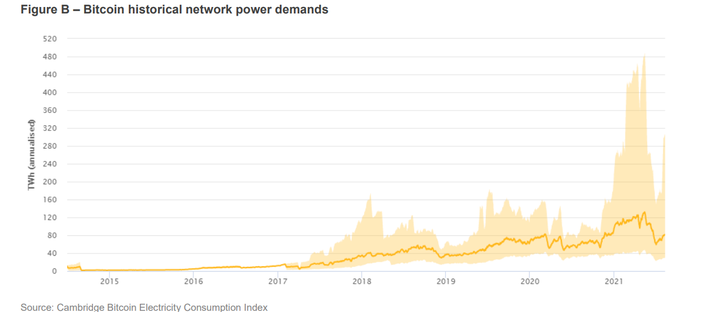
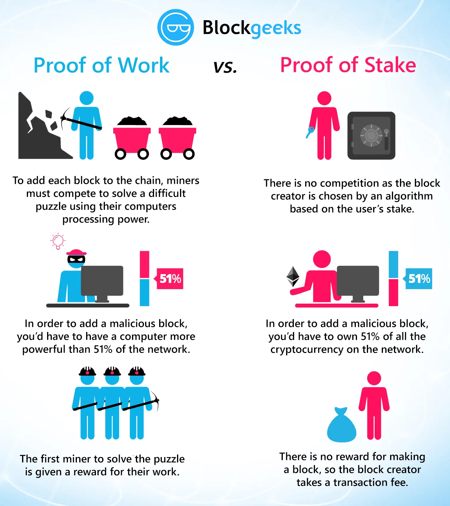
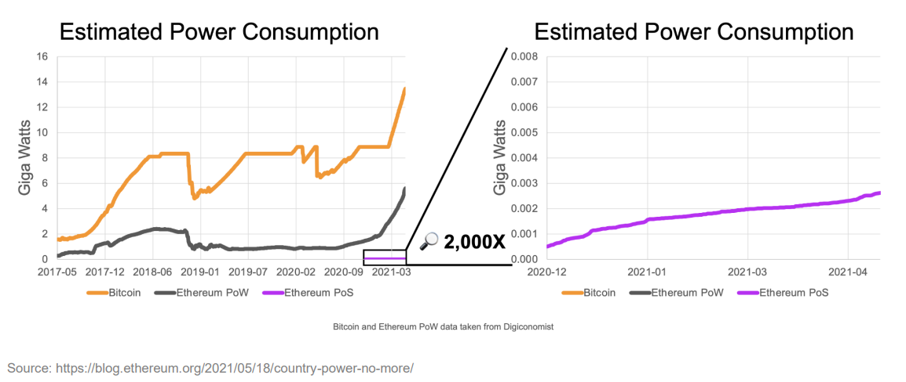

<!DOCTYPE html>
<html lang="en">

<head>
  <meta charset="UTF-8">
  <meta http-equiv="X-UA-Compatible" content="IE=edge">
  <meta name="viewport" content="width=device-width, initial-scale=1.0">
  <title>ITP Blog - Energy</title>
  <link rel="stylesheet" href="../style.css">
  <link rel="stylesheet" href="style.css">
  <style>
    th,
    td {
      font-size: 16px;
    }

    td.column-2,
    td.column-3 {
      text-align: center;
    }
  </style>
</head>

<body>
  <div id="main">
    <h1><a href="/itp">ITP Blog</a></h1>
    <h2><a href="/itp/energy/">Energy</a></h2>
    <h3>Measurement Project</h3>
    <p>
      The subject of blockchain and its energy use has been an ongoing debate since it started being implemented more
      and more. I remember power outages happened very frequently in my home country Iran during the peak high prices of
      crypto because of the process that is called mining. According to <a
        href="https://www.visualcapitalist.com/visualizing-the-power-consumption-of-bitcoin-mining/" target="_blank">
        Visual Capitalist
      </a>
      the yearly power consumption of the blockchain network for bitcoin is 129 TWh, the table also shows the number in
      comparison to some countries and companies. The fact that a blockchain network requires more power than a whole
      country (Norway) is quite concerning.

    </p>
    <div style="padding:1.5em;box-sizing: border-box; background-color: #ffffff;" id="mvp-content-main"
      class="left relative">
      <table id="tablepress-1535" class="tablepress tablepress-id-1535">
        <thead>
          <tr class="row-1 odd">
            <th class="column-1">Name</th>
            <th class="column-2">Population&nbsp;</th>
            <th class="column-3">Annual Electricity Consumption (TWh)</th>
          </tr>
        </thead>
        <tbody class="row-hover">
          <tr class="row-2 even">
            <td class="column-1">China</td>
            <td class="column-2">1,443M</td>
            <td class="column-3">6,543</td>
          </tr>
          <tr class="row-3 odd">
            <td class="column-1">United States</td>
            <td class="column-2">330.2M</td>
            <td class="column-3">3,989</td>
          </tr>
          <tr class="row-4 even">
            <td class="column-1">All of the world’s data centers</td>
            <td class="column-2">-</td>
            <td class="column-3">205</td>
          </tr>
          <tr class="row-5 odd">
            <td class="column-1">State of New York</td>
            <td class="column-2">19.3M</td>
            <td class="column-3">161</td>
          </tr>
          <tr class="row-6 even" style="background-color: #ff000069;">
            <td class="column-1"><strong>Bitcoin network</strong>&nbsp;</td>
            <td class="column-2">-</td>
            <td class="column-3"><strong>129</strong>&nbsp;</td>
          </tr>
          <tr class="row-7 odd">
            <td class="column-1">Norway</td>
            <td class="column-2">5.4M</td>
            <td class="column-3">124</td>
          </tr>
          <tr class="row-8 even">
            <td class="column-1">Bangladesh</td>
            <td class="column-2">165.7M</td>
            <td class="column-3">70</td>
          </tr>
          <tr class="row-9 odd">
            <td class="column-1">Google</td>
            <td class="column-2">-</td>
            <td class="column-3">12</td>
          </tr>
          <tr class="row-10 even">
            <td class="column-1">Facebook</td>
            <td class="column-2">-</td>
            <td class="column-3">5</td>
          </tr>
          <tr class="row-11 odd">
            <td class="column-1">Walt Disney World Resort (Florida)</td>
            <td class="column-2">-</td>
            <td class="column-3">1</td>
          </tr>
        </tbody>
      </table>
    </div>
    <p>And in the figure below taken from the article "Proof-of-Stake: A crypto path to
      lower energy consumption and yield" we see the immense growth of power demands for running the bitcoin blockchain
      network
    </p>
    <div style="width:100%; display: flex; justify-content: center;">
      
    </div>

    <p>
      The main issue with energy consumption is what is known as <span style="background-color: lime; padding:.1em">
        proof
        of work.</span> It basically means that a huge network of computers are trying their best to solve unnecessarily
      complicated mathematical problems to sign or mine a block in the network. In the recent years there have been
      alternatives to this one of which is the concept known as <span style="background-color: lime; padding:.1em">
        proof
        of stake.</span>
    </p>
    <p>
      Proof of Stake (PoS) is a consensus algorithm used by some blockchain networks to validate transactions and add
      new blocks to the blockchain. Unlike the Proof of Work (PoW) consensus algorithm, which relies on computational
      power and energy-intensive mining processes to validate transactions and create new blocks, PoS relies on a
      different mechanism that can significantly reduce energy consumption.

      In a PoS blockchain network, validators are chosen to add new blocks to the blockchain based on the amount of
      cryptocurrency they hold or "stake" in the network. Validators are incentivized to act honestly, as they risk
      losing their staked coins if they attempt to validate fraudulent transactions. This system ensures that the
      validators have a financial stake in the network and are motivated to act in the best interests of the network.

    </p>
    <div style="width:100%; display: flex; justify-content: center;">
      
    </div>
    <p>
      The energy consumption of PoS is much lower than that of PoW because it eliminates the need for mining hardware
      and the associated energy consumption. The PoS consensus algorithm can be implemented on a regular computer or
      even a smartphone, making it accessible to a wider range of users. This significantly reduces the carbon footprint
      of the blockchain network and makes it more environmentally friendly.
    </p>
    <p>Below is an extract from the article "Proof-of-Stake: A crypto path to
      lower energy consumption and yield" on a case example with Ethereum's blockchain network:</p>
    <blockquote>
      Ethereum, the second largest digital asset by market capitalization and the most
      widely used blockchain platform for decentralized applications (dApps), is
      currently transitioning from Proof-of-Work to Proof-of-Stake as part of an initiative
      known as Ethereum 2.0. The Ethereum community sees Proof-of-Stake as a
      solution that will address scalability concerns by increasing transaction capacity
      and reducing gas fees associated with transactions. Previously, popular dApps,
      such as CryptoKitties in 2017 and Uniswap in 2020, have clogged the Ethereum
      network, leading to high network fees and preventing scalability and mass
      adoption.
      The change to Proof-of-Stake is also Ethereum’s answer to environmental
      concerns. The Ethereum Foundation estimated that the existing Proof-of-Work
      system consumes 5.13 gigawatts on a continuing basis, , whereas the Proof-ofStake system consumes 2.62 megawatts
      on a continuing basis, meaning it uses
      about 99.95% less energy than Proof-of-Work. Put another way, the Ethereum
      Proof-of-Work network is estimated to use 2,000 times more energy than the
      Ethereum Proof-of-Stake test network that has been running in parallel. When
      the switch to Proof-of-Stake is made, the Ethereum network will go from using
      roughly the same amount of energy as a medium-sized country to the same
      amount of energy as around 2,100 American homes.
    </blockquote>
    <div style="width:100%; display: flex; justify-content: center;">
      
    </div>
    <p>After reading all this I was curious to make some hands on measurement myself, as my personal computer is not
      powerful enough to run the actual mining algorithms for proof of work, I ran the code for a simulation of a
      blockchain network and kept changing the difficulty level until it took a while for my pc to solve the algorithm,
      even with a simple algorithm like this that is orders of magnitude easier than the actual algorithms being run, I
      could measure 75% more energy consumption, now if we imagine this process times a million difficulty being run by
      ASICs in a network, the energy consumption of the network makes sense.</p>
    <div style="width:100%; display: flex; justify-content: center;">
      <video src="measurement/measurement.mp4" controls width="70%" style="margin: 0 auto;">
    </div>
    <p>One more alternative to proof of work that has gained popularity in the recent years is <a
        style="background-color: aqua; padding:.1em;" href="https://www.chia.net/technology/" target="_blank">Chia.</a>
      which uses an alternative method called <a href="https://www.chia.net/faq/#faq-3" target="_blank"
        style="background-color: lime; padding: .1em;">proof of space and
        time</a>.</p>
    <p>

      Chia is a cryptocurrency that uses a unique consensus algorithm called "Proof of Space and Time" (PoST). This
      algorithm is designed to be more energy-efficient than the traditional PoW.

    </p>
    <p>
      The key difference between PoW and PoST is that PoW rewards miners who are able to solve the mathematical problems
      first, while PoST rewards farmers who have the most unused hard drive space. This means that PoST does not require
      the same level of computational power as PoW, and is therefore much more energy-efficient.

      However, it is worth noting that while PoST is more energy-efficient than PoW, it still requires a significant
      amount of energy to power the hard drives used for farming. Additionally, as Chia becomes more popular, it may
      become more difficult to find unused hard drive space, which could increase energy consumption and decrease the
      efficiency of PoST over time.

    </p>
  </div>
</body>

</html>